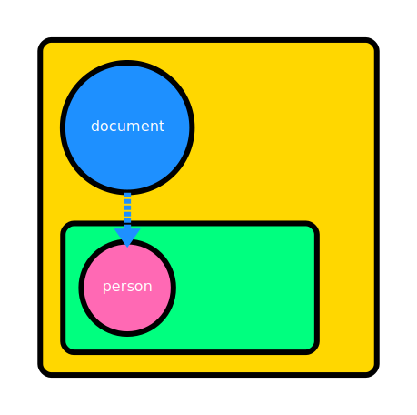

Object Lifecycle
In the realm of Objective-C, and particularly within the mulle-objc framework, objects undergo a fascinating journey through various lifecycle phases. Each phase carries its own set of implications for memory management and thread safety. Let’s dive deeper into this technical landscape and explore some of the implications.

Initial Creation: The Single-Threaded Genesis
When you create an object in mulle-objc you’re still in a phase of single-threaded bliss. This initial stage is crucial for setup of immutable objects.
LAW: Any object passed to another thread must be placed into the autoreleasepool stack of that thread.
During this phase, if you need to dispose of the object, you should use
-release rather than -autorelease. This direct approach aligns with the
single-threaded nature of the object at this point.
Autorelease Phase: Stepping into the Multi-threaded Arena
The next phase begins when an object is -autoreleased. This is a critical
juncture in the object’s lifecycle. Once autoreleased, the object is primed for
a potential multi-threaded existence (assuming it supports multi-threading).
Consider this scenario:
id obj;
obj = [NSObject alloc];
obj = [obj init];
obj = [obj autorelease];
At this point, you need to be prepared for the possibility that any thread could
call mullePerformFinalize on the object. This method is designed to “disable”
the object. Let’s illustrate this with an example:
NSFileHandle *h;
h = [NSFileHandle fileHandleForWritingAtPath:@"/tmp/example.txt"];
// At any point after this, mullePerformFinalize could be called,
// closing the file handle...
[h mullePerformFinalize];
During this multi-threaded phase, it’s crucial to balance -retain calls with
-autorelease. Using -release directly is considered a mistake in mulle-objc,
unlike in some other Objective-C implementations.
Example 1
Consider this code snippet:
document = [Document object];
@autoreleasepool
{
// #1
[[document retain] autorelease];
// #2
}
// #3
Here is what happens:
 #1 |
 #2 |
 #3 |
| A document in the root pool of a hierarchy with a fresh inferior pool | The document gets (retained and) autoreleased into the new pool | The new pool disappears again. The document remains in its old pool |
Example 2
document = [Document object];
// #1
@autoreleasepool
{
// #2
person = [Person object];
[document setPerson:person];
// #3
#1 |
#2 |
 #3 |
| The initial setup with document in its pool | An inferior pool is created | person is created in the inferior pool and ownership is given to document via -setPerson: |
Continuing on:
document = [Document object];
// #1
@autoreleasepool
{
// #2
person = [Person object];
[document setPerson:person];
// #3
}
// #4
@autoreleasepool
{
// #5
[document setPerson:nil];
}
// #6
 #4 |
#5 |
 #6 |
| The creation pool disappears. person is still alive | A new inferior pool appears | Document relinquishes ownership when receiving -setPerson:nil |
In frame #4 person is implicitly in the same pool as document, through the ownership by document. But its not explicitly in the pool. person didn’t “magically” get an -autorelease from somewhere, when its creation pool went down.
Lifting an object to a parent pool
Inside a function or method scope you can -retain and -release objects,
as long as you keep it balanced.
Though you are advised to never call -release directly, you may do so, if you
previously called -retain on the same object. This is a special case, that is
hardly ever useful.
Somewhat more useful is the ability to -retain and -autorelease in the same
function or method scope.
- (Document *) document
{
Document *document;
@autoreleasepool
{
document = [Document object];
[document retain];
}
[document autorelease];
return( document);
}
This can be used to lift an object into a parent pool and therefore extend its lifetime:
 |
The Return to Single-threaded Life
An interesting aspect of mulle-objc’s object lifecycle is the potential return to single-threaded existence. This occurs when an object’s retain count reaches 1. On occasion it can be useful to check for this condition in your code:
if( [obj retainCount] == 1)
{
// Object is back to single-threaded life
}
The Final Act: Deallocation
The deallocation phase always occurs while the object is single-threaded. During
-dealloc we also know that the objects is not in a pool, so objects that are still
retained by the object, must be released now. As they are also not implicitly in
a pool anymore (from the perspective of the instance executing -dealloc) it would be wrong to call -autorelease on them.
- (void) finalize
{
[self cleanup]; // Last chance for cleanup
[super finalize];
}
- (void) dealloc
{
[_data release];
[super dealloc];
}
The distinction between finalize and dealloc is crucial in mulle-objc:
finalize: Closes resources and cleans up state. It can run early viamullePerformFinalize.dealloc: Releases retained objects.
This two-step cleanup process allows for more flexible and robust resource management compared to simpler models used in languages like C++.
Understanding this lifecycle is paramount for several reasons:
- It allows for precise performance optimization.
- It provides clear thread-safety guarantees.
- It enables efficient resource management.
- It helps prevent memory leaks.
- It ensures clean object cleanup.
As you work with mulle-objc, you’ll find that this sophisticated lifecycle management system provides powerful tools for creating efficient, thread-safe, and resource-conscious applications. How will you leverage these capabilities in your next project?